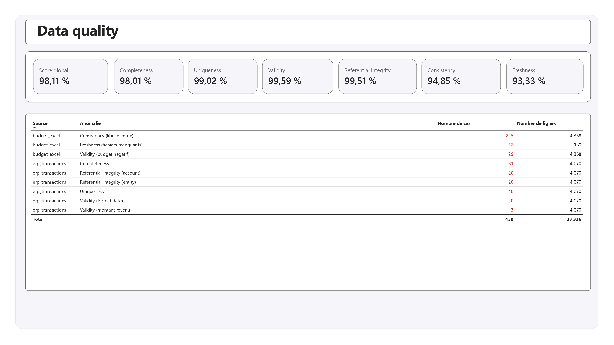
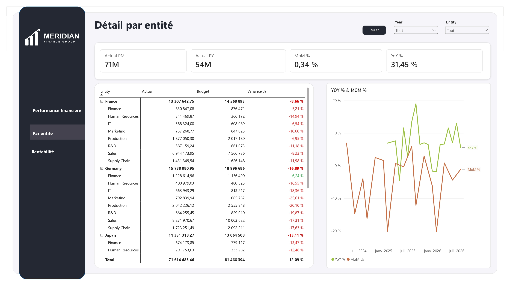
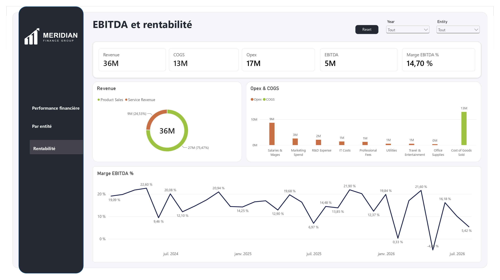
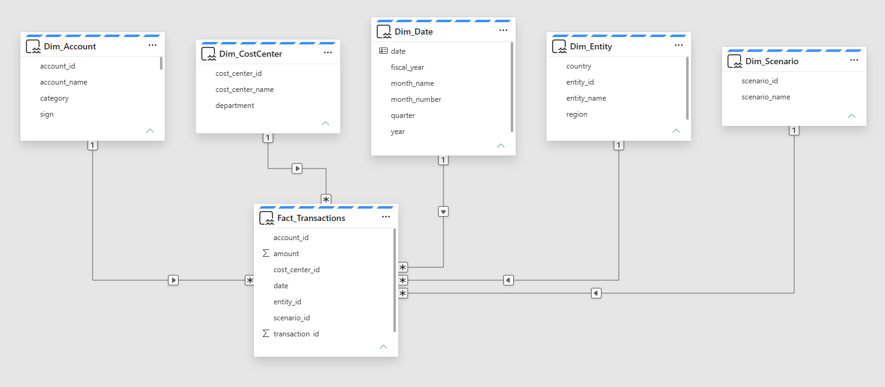
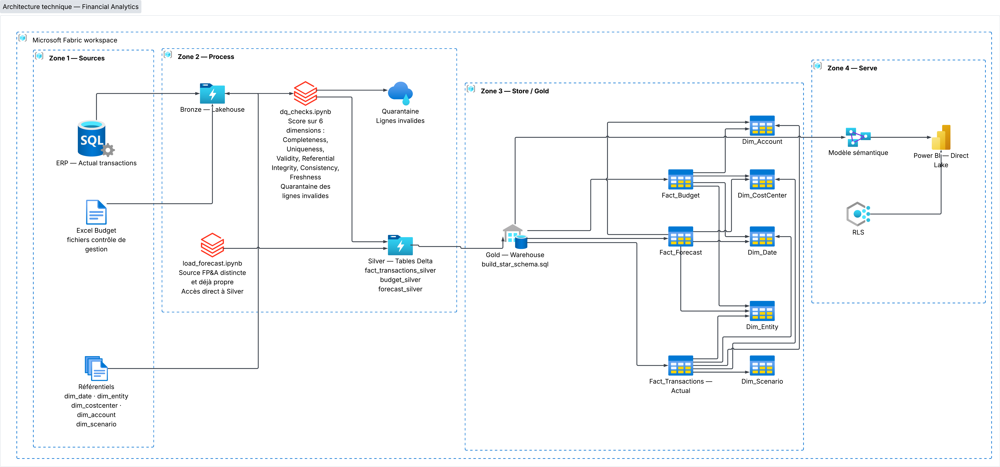

Consolidation de données financières multi-entités (ERP, Budget Excel, SQL Server) dans un Lakehouse Microsoft Fabric, jusqu'à des rapports Power BI de performance financière et de qualité des données Multi-entity financial data consolidation (ERP, Excel Budget, SQL Server) into a Microsoft Fabric Lakehouse, through to Power BI reports on financial performance and data quality
Voir la documentation complète (PDF) View Full Documentation (PDF)
Dans une entreprise multi-entités, les données financières arrivent généralement de sources disparates — un ERP, des fichiers Excel de budget tenus par le contrôle de gestion, une base SQL Server — rarement alignées entre elles. J'ai reproduit ce scénario de bout en bout : ingestion de 5 entités × 8 centres de coûts × 16 comptes sur 31 à 36 mois, contrôle qualité automatisé, modélisation en étoile et livraison de 2 rapports Power BI (Performance Financière, Data Quality) sécurisés par entité. In a multi-entity company, financial data typically comes from disparate sources — an ERP, Excel budget files maintained by financial controllers, a SQL Server database — rarely aligned with each other. I reproduced this scenario end to end: ingesting 5 entities × 8 cost centers × 16 accounts over 31 to 36 months, automated data quality control, star-schema modelling, and delivery of 2 Power BI reports (Financial Performance, Data Quality) secured per entity.

Rapport Power BI « Performance Financière » – Actual vs Budget, EBITDA, variance par centre de coûts "Financial Performance" Power BI report – Actual vs Budget, EBITDA, variance by cost center
Un notebook PySpark calcule un score sur 6 dimensions de qualité, isole les lignes invalides en quarantaine puis produit les tables Silver — score global : 98,1% sur 4 070 lignes ERP et 4 368 lignes Budget. A PySpark notebook scores 6 quality dimensions, quarantines invalid rows, then produces the Silver tables — overall score: 98.1% across 4,070 ERP rows and 4,368 Budget rows.

Rapport Power BI « Data Quality » – score global, 6 dimensions et détail des anomalies par source "Data Quality" Power BI report – overall score, 6 dimensions and anomaly detail by source
KPIs et tendance mensuelle sur la période alignée (31 mois), variance par centre de coûts et détail par compte : KPIs and monthly trend over the aligned period (31 months), variance by cost center and account-level detail:
Warehouse (Gold) → modèle DAX → matrice Actual/Budget/Variance

Matrice hiérarchique Entité → Centre de coûts, avec intelligence temporelle DAX : Hierarchical Entity → Cost Center matrix, with DAX time intelligence:
SAMEPERIODLASTYEAR
YoY % and MoM % measures via
SAMEPERIODLASTYEAR
Dim_Date marquée table de dates + mesures d'intelligence temporelle Dim_Date marked as date table + time-intelligence measures

Cascade Revenue → EBITDA et suivi mensuel de la marge opérationnelle : Revenue → EBITDA waterfall and monthly operating margin tracking:
EBITDA = [Revenue] − [COGS] − [Opex]
Un script SQL construit le schéma en étoile final dans le Warehouse Gold : trois
tables de faits — Fact_Transactions (Actual, reliée aux 5 dimensions dont
Dim_Scenario), Fact_Budget et Fact_Forecast (reliées aux 4
dimensions communes — le scénario est déjà porté par le choix de la table). Des clés étrangères
NOT ENFORCED permettent à Power BI de détecter automatiquement les relations, en
interrogeant directement les tables Silver du Lakehouse via une requête cross-item,
sans copie manuelle.
A SQL script builds the final star schema in the Gold Warehouse: three fact
tables — Fact_Transactions (Actual, linked to all 5 dimensions including
Dim_Scenario), Fact_Budget and Fact_Forecast (linked to the 4
shared dimensions — the scenario is already carried by the choice of table). NOT
ENFORCED foreign keys let Power BI auto-detect relationships, querying the Lakehouse's
Silver tables directly via a cross-item query, with no manual copy step.

Schéma en étoile : Fact_Transactions (5 dimensions), Fact_Budget et Fact_Forecast (4 dimensions communes) Star schema: Fact_Transactions (5 dimensions), Fact_Budget and Fact_Forecast (4 shared dimensions)

Des 3 sources au rapport Power BI, en architecture médaillon Bronze / Silver / Gold — Sources, Process, Store et Serve dans le workspace Fabric From the 3 sources to the Power BI report, in a Bronze / Silver / Gold medallion architecture — Sources, Process, Store and Serve within the Fabric workspace
 Excel (Budget)
Excel (Budget) SQL
Server (ERP)
SQL
Server (ERP) Azure
Azure PySpark
PySpark DAX
DAX Power BI
Power BIScore de qualité global de 98,1% sur les 6 dimensions retenues, avec quarantaine automatique des lignes invalides avant toute analyse. Overall quality score of 98.1% across the 6 dimensions tracked, with automatic quarantine of invalid rows before any analysis.
2 anomalies chiffrées identifiées et corrigées par analyse de la donnée source (EBITDA de -26,7 M€ à +5 M€ ; écart Budget de -13,7% à -12,09%). 2 quantified anomalies identified and fixed through source-data analysis (EBITDA from -€26.7M to +€5M; Budget variance from -13.7% to -12.09%).
Rôle RLS opérationnel : un utilisateur assigné à une entité ne voit que ses propres données, sans dupliquer le modèle ni les rapports. Operational RLS role: a user assigned to one entity only sees that entity's data, with no duplicated model or reports.